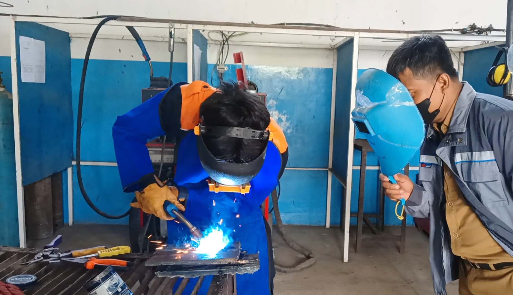
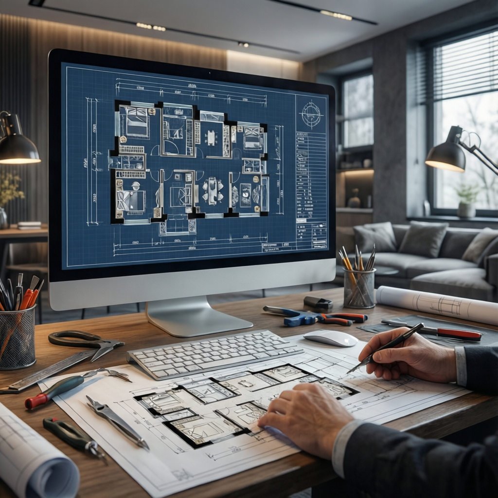

Visi & Misi
Visi
SMK Negeri 1 Simpang TeritipMewujudkan SMK Negeri 1 Simpang Teritip sebagai lembaga pendidikan yang unggul, Beriman dan Bertawqa Kepada Tuhan Yang Maha Esa, Berkarakter Mulia, Peduli Lingkungan yang berbasis dengan kearifan lokal serta Berprestasi menghasilkan lulusan yang siap memasuki dunia industri dan dunia kerja dengan mengutamakan mutu, Keselamatan & Kesehatan kerja dan lingkungan yang sesuai dengan regulasi nasional.


Misi
SMK Negeri 1 Simpang Teritip- Menyelenggarakan pendidikan dan pembelajaran yang berkualitas untuk meningkatkan kompetensi akademik dan kejuruan murid.
- Menanamkan dan mengembangkan nilai-nilai keimanan dan ketakwaan kepada Tuhan Yang Maha Esa dalam setiap aspek kehidupan sekolah.
- Membentuk karakter murid yang berakhlak mulia, disiplin, bertanggung jawab, dan beretika dalam kehidupan bermasyarakat dan dunia kerja.
- Meningkatkan kepedulian terhadap lingkungan melalui penerapan budaya bersih, sehat, dan berwawasan lingkungan di lingkungan sekolah.
- Mengembangkan keterampilan murid yang relevan dengan kebutuhan dunia industri dan dunia kerja melalui pembelajaran berbasis praktik.
- Menjalin kerja sama yang berkesinambungan dengan dunia usaha dan dunia industri (DUDI) dalam rangka meningkatkan mutu lulusan.
- Membekali murid dengan kemampuan adaptasi, berinovasi, dan berwirausaha untuk menghadapi tantangan global.
- Meningkatkan profesionalisme pendidik dan tenaga kependidikan dalam mendukung peningkatan proses pembelajaran.